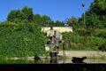
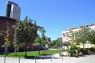
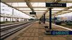
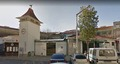
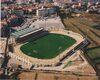

Multimedia
Nesta página encontra conteúdos multimédia.
Fotografias





Vídeo
Poesia
Às margens do Tejo, onde o rio se espalha,
Guarda Alverca a memória do vento e do ar,
Onde a asa de ferro na névoa trabalha,
E o horizonte convida a voar.
Ponte entre o rio e a faina do chão,
História escrita nas asas da aviação.